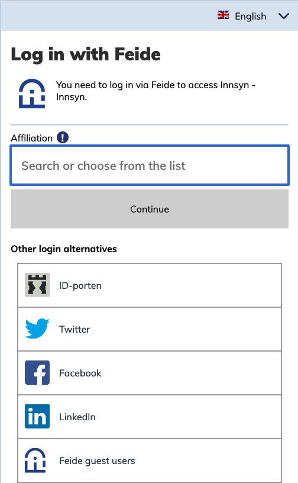
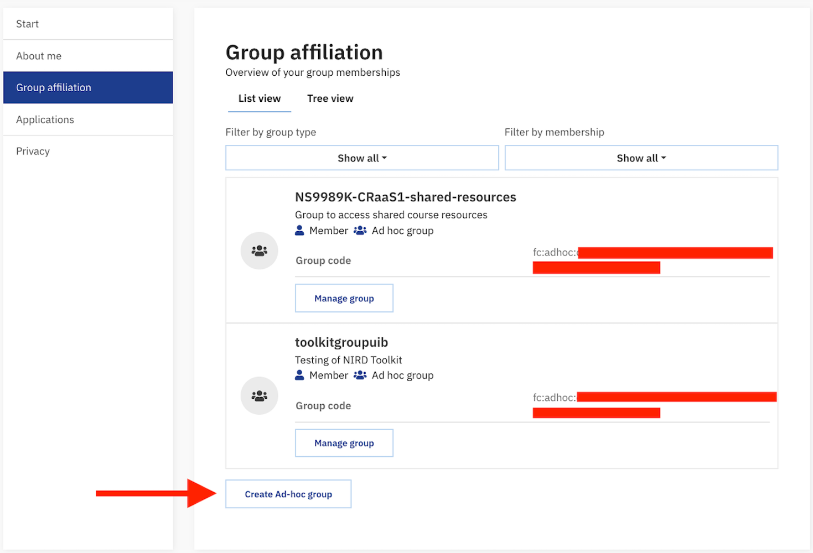
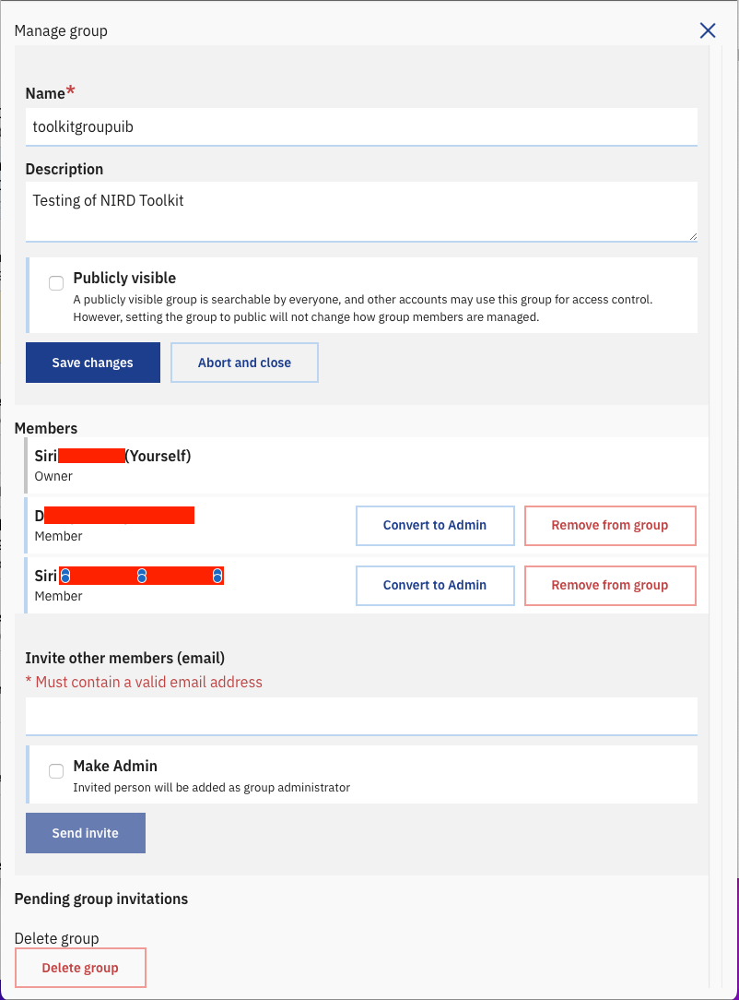
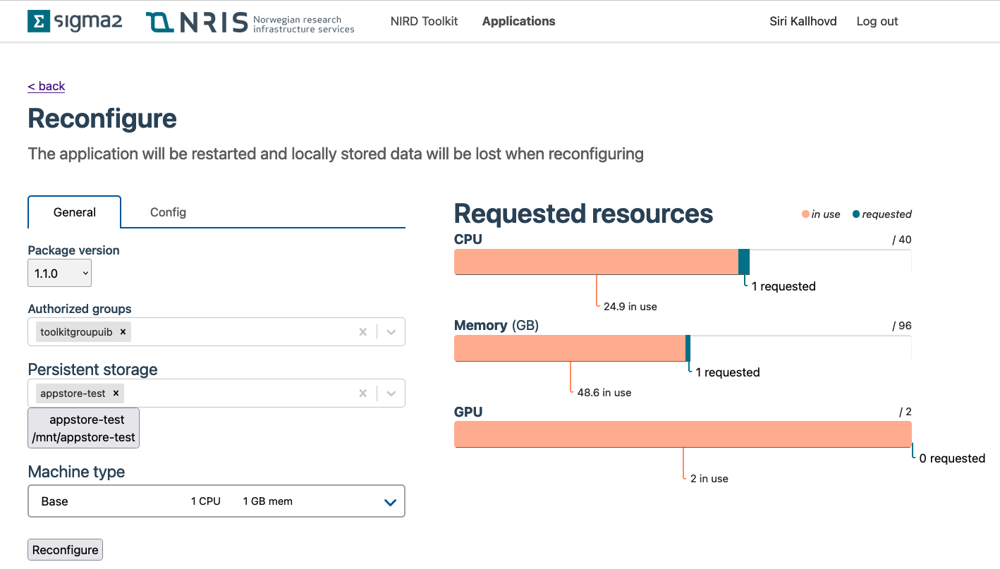
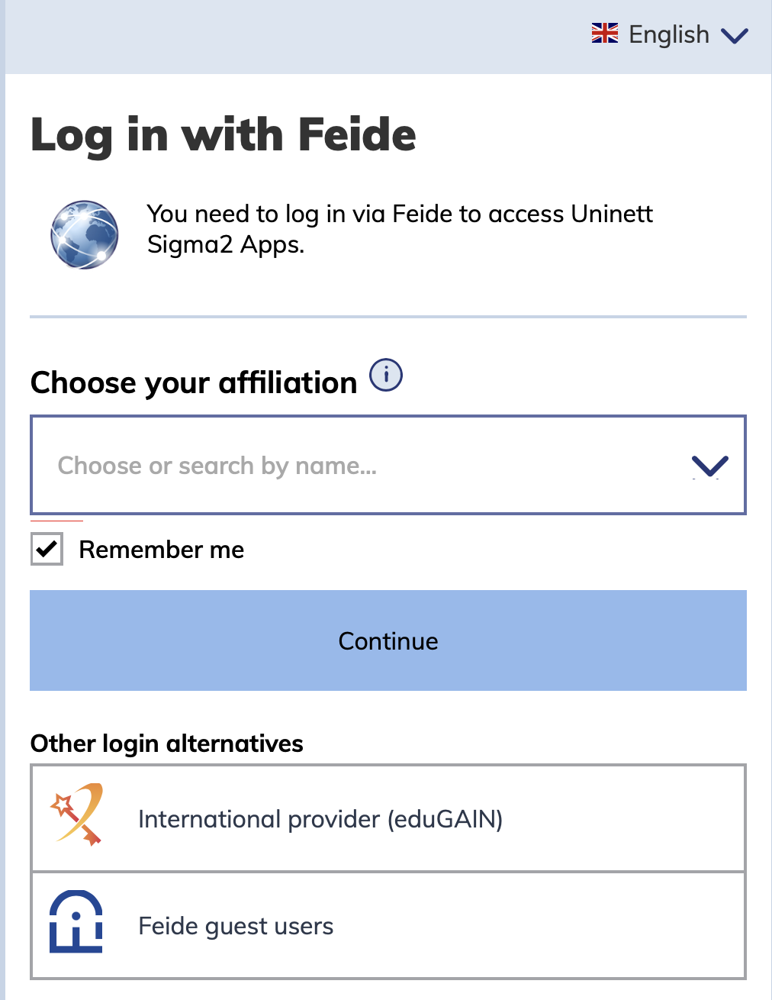

Get ready to deploy a service through the NIRD Toolkit
Only the project leader or the executive officer of a NSxxxxK project can deploy applications through the NIRD Toolkit. The project leader/executive officer can also decide who else shall be authorized to deploy application through the NIRD Toolkit and who shall be able to run the deployed application. This is done by creating a group in Feide Innsyn and connecting it to the resources in MAS (NSxxxxK). Those members of the group who hold administrative rights will deploy applications, ordinary members will run applications.
Go to Feide Innsyn and select the institution you belong to from the drop-down menu. If your institution does not appear there (Feide login), then select “Feide guest users” from the drop-down menu in the “Other alternative login”. You will then be redirected to the OpenIdP page. Create an account in OpenIdP by following the procedure and, once the account has been created, use it to log in to Feide innsyn as Feide guest users.

Once logged in, you will be redirected to the Feide Innsyn dashboard. Create a new group by clicking on the link on the bottom of the page (“Create Ad-hoc Group”).

Once the group is created, the dashboard will show information about the group, including the “Group Code” (fc:adhoc:xxxx-xxx-xxxxx-xxxxx). Send the Group name, Group Code and preferred short name to contact@sigma2.no to be authorized to deploy a service through the NIRD Toolkit. Please specify which of your NSxxxxK projects you want this group to have access to.
You can now authorize other co-workers to run the deployed application, by adding them to the newly created group. Click on “Manage Group” and you will be redirected to a page that contains an “Invite other members (email)” section. Enter the email address of the person that you want to invite into the group, and an invitation link will be sent to them.

Once the invited person accepts the invitation, they will appear as a member of the group. You can make any member the administrator of the ad-hoc group.
Your Feide or Feide OpenIdP that you add to the ad-hoc group needs to be connected to your MAS account in order to deploy applications. Check your account details in MAS here and verify that you are registered through your Feide e-mail.
In order to deploy the application you shall log in to the NIRD Toolkit via your Feide or your OpenIdP account, previously added to the group in Feide Innsyn. Select the group previously created in Feide Innsyn in the “Authorized Groups”. Now you are able to run your application, which will be connected to the project area NSxxxxK.

Log in with OpenIdP
For those that use OpenIdP, at the login page in the Toolkit, choose “Feide guest users” and log in with your OpenIdP account.
